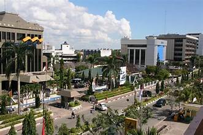

Sejarah

pada zaman Belanda, Banjarmasin menjadi pelabuhan masuk dan keluar bagi seluruh daerah aliran Sungai Barito dan merupakan pelabuhan transito untuk kapal-kapal yang datang dari Singapura dan Jawa, ke pantau timur Kalimantan.
Kawasan Banjarmasin awalnya sebuah perkampungan bernama "banjarmasih" (terletak di Bagian Utara Banjarmasin). Tahun 1606 pertama kali VOC-Belanda mengunjungi Banjarmasin, saat itu masih terletak di muara sungai Kuin.
Kota-kota yang terkenal di pulau kalimantan pada awal abad ke-18 adalah borneo (Brunei City), Marudo, Bendamarfin (Banjarmasin), dan Lava (Lawai). Tahun 1747, VOC-Belanda memperoleh Pulau Tatas (Banjarmasin bagian Barat) yang menjadi pusat Banjarmasin semenjak saat itu hingga ditinggalkan Belanda tahun 1809.
1812 Inggris menduduki Banjarmasin dan menyerahkannya kembali kepada Belanda tahun 1817. Daerah Banjar Lama (Kuin) dan Banjarmasin bagian Timur masih tetap menjadi daerah pemerintahan pribumi dibawah Sultan Banjar yang berkedudukan di keraton Martapura ( istana kenegaraan) hingga diserahkan pada tanggal 14 Mei 1826.
Tercatat pada tahun 1849, Banjarmasin ( Pulau Tatas) menjadi ibukota Divisi Selatan dan Timur Borneo. Saat ini rumah Residen terletak di Kampung Amerong berhadap-hadapan dengan Isatana pribadi Sultan dikampung Sungai Mesa yang dipisahkan oleh sungai Martapura
Pada tahun 1936 ditetapkan Ordinantie pembentukan Gouvernementen Sumatra, Borneo en de Groote-Oost (stbld. 1936/68).Borno Barat dan Borneo Selatan-Timur menjadi daerah Karesidenan dan sebagai Gouvernementen Sumatra, Borneo en de Groote-Oost yang pusat pemerintahannya adalah Banjarmasin.
Geografis

Letak kota Banjarmasin secara astronomi berada diantara 3°22'54" Lintang Selatan dan 114°31'40" sampai dengan 114°39'55" Bujur Timur.
Luas wilayah kota Banjarmasin adalah 98,46 kilometer persegi yang terbagi menjadi 5 kecamatan.
Kecamatan dikota Banjarmasin yaitu Banjarmasin Selatan, Banjarmasin Timmur, Banjarmasin Barat, Banjarmasin Tengah, dan Banjarmasin Utara.
Adapun secara geografis, batas wilayah Kota Banjarmasin sebelah utara berbatasan dengan Kabupaten Barito Kuala, sebelah timur berbatasan dengan Kabupaten Banjar, sebelah barat berbatasan dengan Kabupaten Barito Kuala dan sebelah selatan berbatasan dengan Kabupaten Banjar.
Sebagai kota dengan julukan seribu sungai. Banjarmasin dilewati oleh beberapa aliran sungai seperti sungai Barito dan sungai Martapura.
Sungai Martapura merupakan sungai terpanjang yang melintasi Kota Banjarmasin dengan panjang 25.066 meter.
Wisata

Menara Pandang Banjarmasin, yang juga dikenal sebagai Menara Pandang Martapura, adalah salah satu tempat wisata yang sangat populer di Kalimantan Selatan.
Terletak di Jalan Pangeran Antasari, menawarkan pemandangan indah dari ketinggian yang sangat menakjubkan.
Menara ini memiliki ketinggian sekitar 60 meter dan terdiri dari 13 lantai. Setiap lantai menawarkan pemandangan yang berbeda-beda dari kota Banjarmasin dan sekitarnya.
Dari lantai paling atas, pengunjung dapat melihat panorama kota Banjarmasin yang sangat luas , sungai Martapura, dan juga Pulau Kembang.
Selain itu, didalam Menara Pandang Banjarmasin juga terdapat restoran dan kafe yang menyajikan berbagai macam hidangan lokal dan Internasional. Sehingga pengunjung dapat menikmati makanan sambil menikmati pemandangan yang indah.
Selain menawarkan pemandangan yang indah, Menara Pandang juga memiliki nilai sejarah yang cukup tinggi.
Menara ini dibangun pada tahun 1994 oleh Pemerintah Kota Banjarmasin sebagai simbol kemajuan kota. Dalam beberapa tahun terakhir. Selain itu telah menjadi salah satu destinasi wisata yang sangat populer di Kalimantan Selatan.
Selain itu, Menara Pandang Banjarmasin juga memiliki nilai sejarah yang tinggi dan menjadi salah satu simbol kemajuan kota banjarmasin